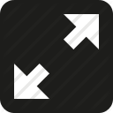

Different Editor themes. My personal fav are ambiance, night, pastel-on-dark, the-matrix, vibrant-ink, xq-dark but feel free to check other themes and fix theme for our project.
Edit code
Select a theme:
Enter Full Screen Mode.(Press Esc key to exit Full screen Mode)